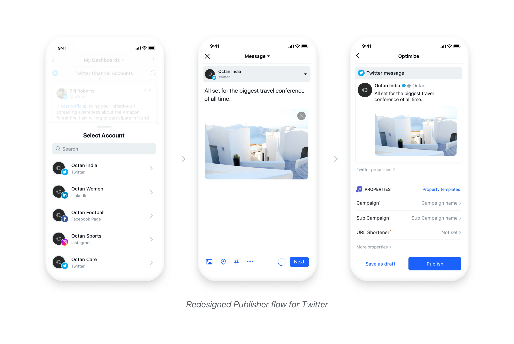
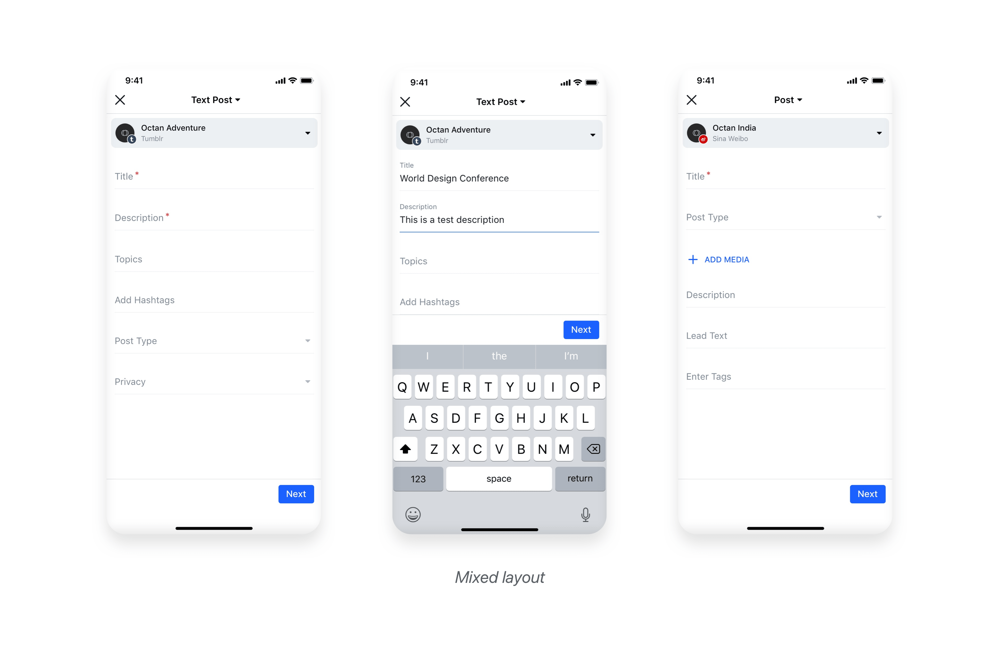

Sprinklr is a provider of enterprise software for customer experience management. It helps brands turn public conversations on media channels into valuable insights to improve advertising, customer service, and more. Some of the top clients of Sprinklr include Nike, Microsoft and McDonald’s.
Problem Brief:
Sprinklr also offers a mobile solution to help clients perform major tasks on the go but due to complexity of the product there were very few engagements. Owing to its high business value, the entire app experience was redefined so as to bring mobile to the forefront.
The challenge here was to redesign Publisher, one of the most promising products of Sprinklr which helps clients to publish posts on more than 25 social media channels.
** Spoiler Alert: A whopping 79.7% increment in post published from mobile was noticed within two weeks after its realease. üéâ
Understanding the users:
“Empathy is at the heart of design. Without the understanding of what others see, feel, and experience, design is a pointless task.” —Tim Brown
Reserach:
1. Quantitative Research:
Most of the Sprinklr clients are based outside India so as to help us with the user study, we had an inhouse research team. The queries were submitted to them to which they responded back after interviewing six clients.
Sample questionnaire:
1. When is publishing through mobile preferred over desktop?
2. Do they publish on multiple accounts or platforms at a time? If so, is content modified for each platform?
3. What is the mobile publishing process? Who would monitor the content? Would there be an approval required?
4. What kind of posts do users prefer to post through mobile (e.g. text, text with image, carousel)?
2. Evaluating the data of existing publisher:
The data was analyzed to help us understand the usage of different features of Sprinklr Publisher.
Key Insights:
1. User prefers publishing via mobile app over desktop mostly for:
A. Dealing with crisis management during non-business hours
B. Publishing live events details wherein content has been created on mobile.
2. Surprisingly approx 95% of the user uses a single channel publishing for mobile at a time.
(One of the main selling points of Sprinklr Publisher is the ability to post on several social media channels at a time,)
3. Almost 90% of the Users use Twitter, Facebook, Instagram and LinkedIn for posting content.
4. Majority of them found it to be time-consuming and were concerned about the volume of properties required.
5. Most were unable to resolve unexpected errors forcing them to post directly through social media.
6. The users had no way to confirm whether a post has been published unless viewed from a native platform.
Design Constraints:
The interaction style and visual language of the publisher was redesigned making sure it is consistent with the other Sprinklr modules.
Target Business metrics:
“User-centered design isn’t just about creating a great experience for customers — it’s also a smart business move”.
1. Increase in retention and User Adoption (Increased NPS, Completion rates)
2. Increase in User productivity/ Efficiency (Reduced Completion Time, Errors)
3. Decreased User Support Cost (Decreased ticket raised)
Redefining the experience:
1. Restructuring the IA and Task Flow:
The users perceived the entire publishing process to be time consuming because of the complicated flow and the multiple steps required to publish a given post.
As I went through the current designed app, several loopholes were identified and the flow was found to be highly inconsistent with the user mental model. So, the overall structure of the publishing was redefined and the entire flow was simplified from 4-steps to merely 2-steps. But it came with a limitation. As per the insights, since less than 5% were using multiple channel publishing at a time, we decided to go with single channel publishing.
Key Learning: Rather than putting each and every features of the web, we included only the crucial features and decided to customize further on the request of client.

Key consideration while developing the Publisher flow:
1. Leveraging Mental Models: Helping users perform required action without any additional assistance
2. Following the “Less is More” approach: Eliminating the rarely used features
3. Putting Friction Costs into action: Directing users to complete a task by removing small barriers. Conversely, adding small barriers to hinder undesirable behaviour.
4. Embracing flexibility and modularity: Designing everything with a view that it is meant to evolve and grow.
5. Defaulting: Providing users with default action to increase efficiency.
Restructuring the Content page:
The content page of the current Publisher maintained a similar structure for all the channels. But since the content addition flow of various channels differs in some way or the other, the information prioritisation was missing and its behaviour was inconsistent with the users mental model. So, the challenge here was to optimize for different social media channels(25+) keeping in mind it should not hamper the consistency of the platform.
So as to deal with the above issue, three distinct layout of the content page was finalized:
1. Text centric: For Twitter, Linkedin Post, etc wherein Text is the driving factor.
2. Image centric: For Instagram, Facebook Album, etc wherein image is the driving factor.
3. Mixed Layout: For Sina Weibo, Pinterest, etc wherein there are multiple input fields.

Based on the above 3 styles, content structure for the different media channels was defined.
Since 90% of the posted content was from Instagram, Facebook, LinkedIn and Twitter, end to end screen for each of the different post types was defined while for the rest 10%, the above Mixed layout was used.
Key Learning: It's important to consider edge cases beforehand but let it not drive your design decision.
Key considerations:
3. Designing for the final step:
The final step i.e optimize section can be broadly divided into the upper preview part and lower Properties section.
Properties Section:
The properties sections usually contain 25-30 fields due to which it became quite overwhelming for the user and most of them complained of getting lost in between. This becomes even more crucial when the post needs to be published instantly. To speed up the process, template presets were introduced which can be filled beforehand. Also to give a simpler look to interface, only the mandatory and filled properties were thought to be shown upfront, but it had its own problem as properties are interdependable as well. So I quickly tried few explorations:
Iteration1 cons: Ignores the user Mental Model (Unexpected Step 3)
Iteration2 cons: Increment in Additional steps of Affected fields (Step 3)
Final Properties Design:
The final proposed solution was not just to include the mandatory and filled properties but also the unfilled and non mandatory properties for interdependable options listed upfront. This was highly consistent with the user mental model and no further additional steps were required. The only limitation was increased information clutter.
Key Learning: For every problem, quickly sketch out various iterations and you will eventually come with a better solution.
As per the data the feature of Advance Channel properties was used quite less frequently, so to deemphasize it; it was clubbed under a section; and only filled ones were shown upfront to give a user a quick glance. For a further cleaner look, Icons were introduced to give a quick glance of the filled data to the user.
Key Learning: Treat every element on the screen as a tangible asset and like a craftsman, model it with perfection.
Designing for Error State:
“The best error message is the one that never shows up” — Thomas Fuchs
Based on the insights, there were a lot of instances where users were forced to publish content directly from the native app because they were unable to handle errors in the publisher. As such it was important to redefine error experience. This has to be designed keeping in mind that the error handling behaviour has to be replicated for the entire platform.
Important consideration for the final error design:
1. Error Navigation at the bottom for better reach
2. Visibility of actionable error message upfront
3. Easy toggle between the errors
4. Sequential error handling experience